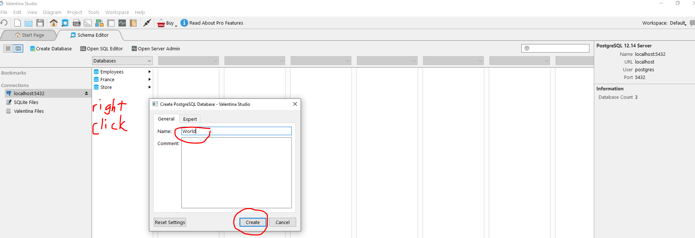
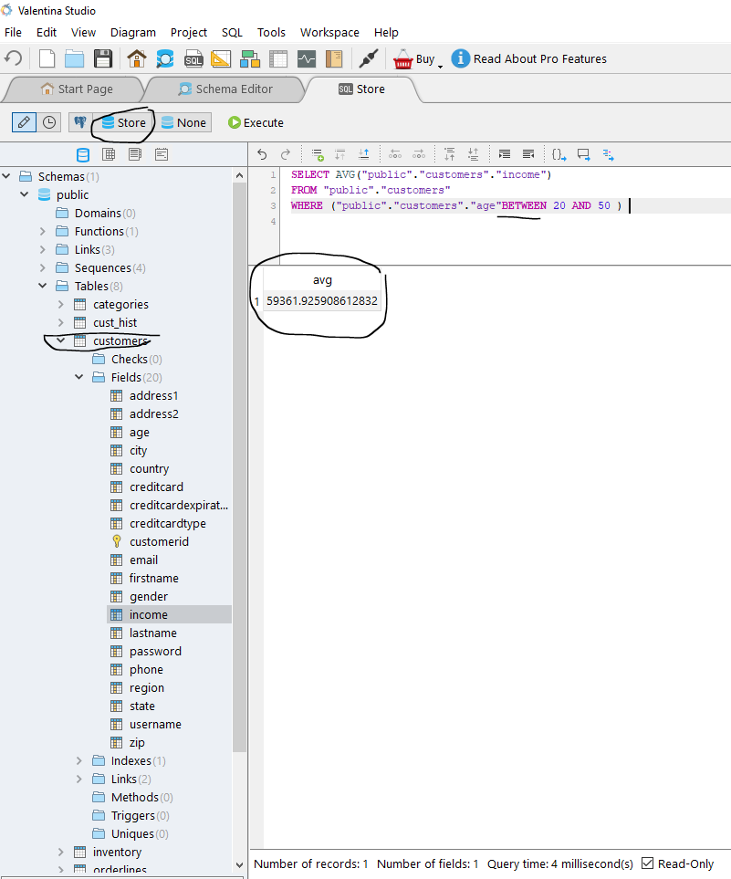
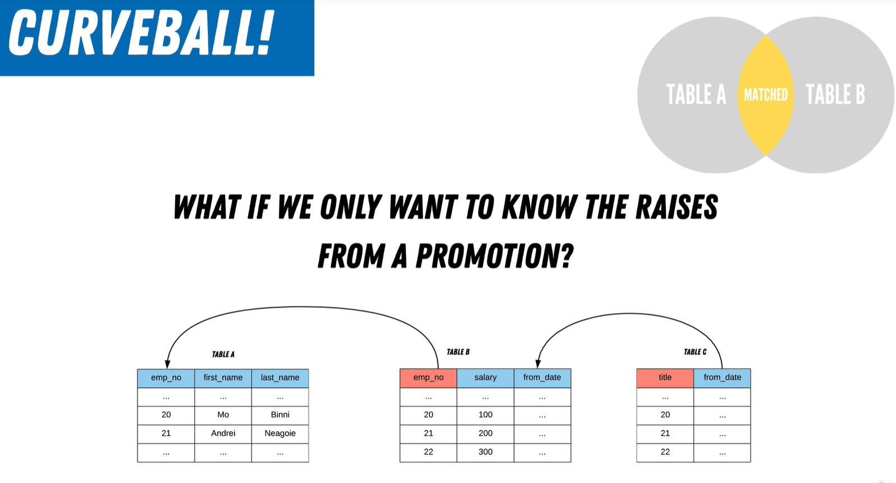

Primary Keys
A primary key is a unique identifier (think of it like an ID card) - and as such can be used to link all information held elsewhere to that unique id.
A database is a hardware and software system that allows a user to store, organise and use data.
https://www.db-fiddle.com/
SQL is a declarative language, we just say “give me this”. Imperative programming defines how it will happen. Java is an example of an imperative language. Python has elements of both.
Hierarchical models are rarely seen today due to their inefficiencies. Each parent can have multiple children but each child can have only one parent.
The Network Model expanded on the hierarchical model by allowing many-to-many relationships. The children could have multiple parents.
The limitations of the parent-child structure present in the hierarchical and network models, were overcome with a relational model. We don’t have a parent-child relationship any more - we have a flat structure, with all of our information now held in separate tables. But how do we link them together?
One way is to create a third table - as per the above screenshot.
A better way however is to introduce keys.
Dr. Edgar Frank Codd (August 19, 1923 – April 18, 2003) was a computer scientist while working for IBM he invented the relational model for database management ( theoretical basis for relational databases). Codd proposed thirteen rules (numbered zero to twelve) and said that if a Database Management System meets these rules, it can be called as a Relational Database Management System. These rules are called as Codd’s12 rules. Hardly any commercial product follows all.
Each table has a unique name. Each table has columns which we can name and these represent a specific type of data. Each table also has rows which is singular piece of data.
The collection of all the columns (sometimes referred to as attribute) is known as the degree of the relation and each column has its own domain/constraint in terms of the type and format of data that can be stored in that columnn.
Rows (sometimes referred to as tuples) follow the column constraints. The collection of rows is sometimes referred to as the cardinality of the table.
A primary key is a unique identifier (think of it like an ID card) - and as such can be used to link all information held elsewhere to that unique id.
A foreign key references the primary key of another table, thereby facilitating a relationship and link between two tables.
The databases that a business uses to store all its transactions and records are called online transaction processing (OLTP) databases. These databases usually have records that are entered one at a time. Often they contain a great deal of information that is valuable to the organization. The databases that are used for OLTP, however, were not designed for analysis. Therefore, retrieving answers from these databases is costly in terms of time and effort.
Online analytical processing (OLAP) is a technology that organizes large business databases, commonly within Data Warehousesand supports complex analysis. It can be used to perform complex analytical queries without negatively affecting transactional systems.
OLAP systems were designed to help extract this business intelligence information from the data in a highly performant way. This is because OLAP databases are optimized for heavy read, low write workloads.
Examples of each are included below :


Note that in order to install version 12 you need to be running on a 64 bit system. You can check which system you are running on as per the folllowing:
Let’s go ahead and install version 12 of postgreSQL directly onto our machine. Valentina DB will allow us to manage and run our database queries in a visual way. The installation and configuration will differ depending on your operating system. I have a Windows machine but have a Linux set up installed Ubuntu :
Ubuntu includes PostgreSQL by default however to install PostgreSQL on Ubuntu, run the following from the command line:
sudo sh -c 'echo "deb http://apt.postgresql.org/pub/repos/apt $(lsb_release -cs)-pgdg main" > /etc/apt/sources.list.d/pgdg.list'
wget --quiet -O - https://www.postgresql.org/media/keys/ACCC4CF8.asc | sudo apt-key add -
sudo apt-get update
sudo apt-get -y install postgresql
apt-get install postgresql-12If you are unfamiliar with the Linux command-line I recommmend this beginner’s guide.
In general, when you see either of the following two messages:
then it’s typically the same root cause. Try worrking through the suggested solutions included at the link below:
https://askubuntu.com/questions/1379425/system-has-not-been-booted-with-systemd-as-init-system-pid-1-cant-operate
In my case the following worked for me.
In Ubuntu on WSL, many of the common system services still have the “old” init.d scripts available to be used in place of systemctl with Systemd units. You can see these by using ls /etc/init.d/ and start postgres with sudo service postgresql start, and it will run the /etc/init.d/postgresql script with the start argument.
https://www.valentina-db.com/en/all-downloads/vstudio/current
It’s good practice to create a bin directory for executable files. Then install from the command line using :
wget https://www.valentina-db.com/en/all-downloads/vstudio/current/vstudio_x64_lin_deb?format=rawNote that we can rename the file to something a bit tidier by adding the following to the above :
- O valentina
We also need to change the permissions so that our computer knows this is an executable file (file should be green in colour)
chmod +x valentina And then finally, install using :
sudo apt install valentinahttps://fileinfo.com/extension/deb
https://linuxhint.com/ubuntu_dpkg_installation/
https://www.howtogeek.com/362203/what-is-a-tar.gz-file-and-how-do-i-open-it/
Ultimately I could not resolve the installation issues with Valentina on Ubuntu, so I installed the Windows version which was straightforward.
First make sure you are connected to postgreSQL :
sudo -u postgres psql postgres and then from the terminal:
\password postgresand set it to root.
Download and unzip the database files from the Resources dropdown :
Create four separate databases within Valentina Studio as highlighted below:

Then, for each newly created database:
`File / Load Dump` and select the respective .sql file Let’s now have a go at getting some information out of our databases:
1. Give me a list of all employees in the company2. How many departments are there in the company?3. How many times has employee `10001` had a raise?4. What title does employee `10006` have?We can rename a column by running the following query :
SELECT <OLD_COLUMN_NAME> AS `<NEW_COLUMN_NAME>`
We can concatenate (join) two columns together, separated by a space ' ' using :
SELECT CONCAT (<COLUMN_1>, ' ', <COLUMN_2>) AS <"NEW_COLUMN_NAME">Text can be concatenated using :
CONCAT('TEXT', 'TEXT')Note the use of single quotes to add the space string, but double quotes to name the new concatenated column.
Applying the above knowledge, let’s now :
function in SQL ?A function is a set of steps that creates a single value. A function takes specific input parameters and generates an output. Different functions do different things.
In the previous example our CONCAT function took two column names, and a string separator as input parameters, and generated a concatenated string as output.
There are two types of functions:
summary valueCONCATTo illustrate how these functions work let’s use some examples :
See this link for some more exercises to have a go at.
As with Python, adding comments to ur SQL queries can improve readability. For simple queries the SQL language should hopefully be self-explanatory, however for complex queries, adding comments is vital not only for other users, but also for ourselves when we revisit our query at some point in the future.
Comments can be made like this :
– Comment all the things
– I like having single line comments
/*
Multi line comments are also
pretty sweet
*/

Comments can be positioned at the top of the query or at the side. Here is a useful guide to best practice.
; instead of a ," instead of ' – single quotes are for TEXT, double quotes are for TABLES or COLUMN NAMESAND and ORThe AND filter expands our search by chaining together multiple criteria to filter. Only information that meets ALL the search criteria will be returned. Using the OR filter flags the start of a new filter. It can be helpful to use brackets to separate the different clauses :
Let’s try to apply our knowledge of the AND OR filters to answer the following question :
How many female customers do we have from the state of Oregon(OR) and New York(NY) ?NOT keywordThe NOT filter trims our search to remove things we don’t need, by grabbing everything but.... This example is simplified however does illustrate:
SELECT firstName, gender
FROM users
WHERENOTgender = ‘M’;
This returns the firstName and gender for every user who is NOT male
Let’s use this information to answer the following question:
How many customers aren't 55 ?
Here are some more exercises to reaffirm our knowledge.
So far we have seen how to return data = to or not = to certain criteria. But what if we want to filter by a range. We can do this using something called Comparison Operators.
> – greater than< – less than<= – less than or equal to>= – greater than or equal to= – equal to!= – is not equal toLet’s try answering some questions to illustrate how these comparison operators work.
Generally when you look at a SQL query the order looks something like this :
SELECT
FROM
WHEREhowever, under the hood, the order of operations that the database follows is actually more like this :
So when constructing your query first think about where the data you want lives, and then the filter conditions you want to apply, before finally selecting that data.
A statement having multiple operators is evaluated (executed) based on the priority of operators.
If the operators have equal precedence, then the operators are evaluated directionally,
Care has to be taken to ensure that we understand this operator precedence when constructing queries. The query below will NOT return all females from from either Oregon or New York. Rather it will return females from Oregon, and males and females from New York.
The AND filter is considered first and chains the gender and state, and the OR filter is considered last.

We can either reconfigure our AND OR filters paying heed to their operational precedence :
Or we can make use of parentheses to frame our query:
Here is another example which demonstrates the priority of the logical operator NOT over AND :
This would filter out the state of New York, and therefore return all females over 20 years old with a salary over 1k not from New York.
And here is one more example which demonstrates the priority of ( ) over NOT :
This would first consider only people aged 21 to 29, and exclude anyone from New York or Oregon, and return anyone from this subset with salary > 1k.
The above query effectively has two separate filters :
The two filters will be merged and, as filter 2 overlaps filter 1, we will not get the desired output. Filter 2 will populate our query result with everyone older than 20, disregarding the younger than 30 filter included in filter 1.
The above query is effectively three separate filters, and so won’t provide any helpful information.
Following the order of priorities, brackets first, then the AND (careful - this is outside the brackets) and the OR which is considered last (but is still priority over the AND as it’s inside brackets), we effectively have two filters in play here:
As we can see if we don’t fully grasp the rules of the SQL game then there is a real risk that we will construct our query incorrectly and end up returning information that does NOT answer the question that we had in mind.
Here are a couple more questions to test our comprehension of Operator Precedence :
NULL valuesWhen a record does not have a value it is considered empty.NULL is the term used to represent a missing/empty value. A NULL value is different from a zero value or a field that contains spaces. Conceptually, the SQL NULL value could be anything!
No matter what you do with NULL (subtract, divide, equal) it will always be NULL.
Be very deliberate and mindful of what you term NULLABLE when creating database entries. Make sure your rationale is clearly documented, as you might lose track of the NULLs and even though you might not be impacted, someone else in the data lifecycle might well be! Expect things to break. Always check for NULLS.
IS KeywordThe IS operator allows us to filter on values that are NULL, NOT NULL, True or False.
Filter out NULLS
SELECT <field>
FROM <table>
WHERE <field> IS [NOT] NULL;Filter out empty
SELECT <field>
FROM <table>
WHERE <field> = '' IS NOT FALSE; -- WHERE <field> = '' IS TRUEFilter out a value
SELECT *
FROM users
WHERE age = 20 IS FALSE; -- WHERE age != 20
-- WHERE NOT age = 20How can we clean up our data and replace our NULL values?
SELECT coalesce(<column>, 'Empty') AS column_aliasSo, for the selected column, any NULL values will be replaced by ‘Empty’. Note that we have to rename this column using an alias otherwise it will take on the function name (coalesce).
In a similar way we can coalesce for columns which contain mumerical data :
SELECT SUM(coalesce(age, 30))
FROM "Student";In this scenario, any NULL values for column “Age” will be replaced by a default value say of 30 (which might represent the mean, or median, or mode value).
Besides True and False, the result of logical expressions in SQL can also be Unknown.
Example 1:
(NULL = 1) OR (1 = 1)NULL OR TRUE = TRUE
Example 2:
(NULL = 1) AND (0 = 1)
NULL AND FALSE = NULL
Example 3:
SELECT <column>
FROM <table>
WHERE <column> = NULLIf there are NULL values in the column, NULL cannot equal NULL. And if there aren’t NULL values then this will equate them to NULL. Either way, our query will be rejected.
Example 4:
SELECT <column>
FROM <table>
WHERE <column> IS NULLIf there are NULL values in the column, then we will get them, by virtue of this magic IS operator.
Let’s try out some exercises to check our understanding of 3-value logic :
Adjust the following query to display the null values as “No Address”
SELECT address2
FROM customers
Fix the following query to apply proper 3VL
SELECT *
FROM customers
WHERE COALESCE (address2, null) IS NOT null;
Fix the following query to apply proper 3VL
SELECT coalesce (lastName, ‘Empty’), *
FROM customers
where (age = null);
Rather than use column> >= in conjunction with column <= to specify a range, there is a handy shorthand available named BETWEEN. This form is more readable and maintainable. Let’s apply this using some exercises:

IN KeywordWhat if I want to find multiple values but not write endless statements? We can use the IN keyword to check if a value matches any value in a list of values. This simplifies our filtering.
Let’s try a couple of exercises to consolidate our understanding :
ILIKE (partial lookups)What if you don’t know exactly what you are searching for? We can use ILIKE in conjunction with special wildcard characters (placeholders):
% any number of characters
_ one character
SELECT first_name FROM employees
WHERE fist_name ILIKE 'M%' ;In the above example the query will return any employees with a first name starting with M, but we can create different search patterns by changing the position of these placeholders as illustrated below:
There is also a LIKE search however note that this is case sensitive so why risk using it?
Note that we can only use the postgres ILIKE on text, so we must CAST (change data type) any column that we want to search to text.
There are two different ways to change the data types in SQL :
CAST (salary AS text)
salary ::text
Let’s look at some examples to test our understanding:
EXTRACT (YEAR FROM AGE(birth_date)) – we will learn about this in later parts of the course
Working with dates in databases, and software in general, is a difficult area because of the different time zones that exist. The concept of time zones was introduced by Sir Sanford Fleming at a conference in Grenwich, United Kingdom in 1884 (hence the now familiar reference point of Greenwich Mean Time (GMT) for all other world timezones).
Universal Time Coordinate (UTC) is a time standard, a reference system which overcomes the difficulties caused by time zones. To use an analogy, we wouldn’t store the salary for one employee as a number, but as text for another employee. It’s the same with time - we need to use a universally consistent measure which transcends geographical boundaries.
Although postgresql adjusts the display dates to align to the local timezone of wherever the database was installed, PostgreSQL assumes that any date introduced to the system is in UTC format, and stores dates that way.
To see what timezone postgreSQL is running in :
SHOW TIMEZONE;To change the timezone for the current session :
SET TIME ZONE 'UTC';If we want to view dates in UTC at the USER level we can use:
ALTER USER postgres SET timezone = 'UTC' The PostgreSQL documentation includes a detailed description of how dates are handled. ISO-8601 is the date formatting standard, a way of representing a date and time, and is important so that other applications understand how to consume what we give them.
YYYY-MM-DDTHH:MM:SS <+02:00> -- optional timezone info
2023-03-01T11:09:37 -- 1st March 2023 11:09am and 37secsA timestamp is a date with time and timezone info, for example:
SELECT now()
2023-03-01 10:18:28.205185+00To illustrate how postgreSQL handles dates, and how this can be specified by the user at the point of inception, see below :

So, when to use timestamps and when to use dates? Often we don’t need the granular information provided by timestamps and dates work just fine, but it depends on what you are storing. For example in the case of cataloguing when a drug was administered to a patient, or the date that a contract was signed timestamp information is of critical importance.
Thankfully, postgreSQL gives us operators to help simplify dates.
There are two ways to obtain the current date in postgreSQL :
SELECT NOW()::date; -- casts the time to date format
SELECT CURRENT_DATE -- this gives us a subset of the ISO-8601 formatWe can format the current date by using TO_CHAR passing in CURRENT_DATE and specifying desired format using format modifiers:
SELECT TO_CHAR(CURRENT_DATE, 'dd/mm/yyyy');The documentation includes the various template patterns available when using format modifiers e.g. to convert to day of the year :
What if we wanted to calculate the difference between two dates? This is a very common requirement particularly in the business use case where the charge is based on time, and we have a pick up and drop off e.g. a bike hire company.
We can use operators such as - or + in the usual way, just as we do with numerical values:
SELECT NOW() - '1800/01/01'Subtracting dates returns the difference in DAYS.
We can convert a string to date as follows:
SELECT DATE `1800/01/01`This converts a date to a date format for postgreSQL, that is ISO-8601.
When we calculate AGE we need to ensure we cast to date:
SELECT AGE(DATE '1800/01/01')If we want to calculate the difference between two specific points in time, we simply pass in the two dates as arguments to our AGE function:
SELECT AGE(DATE '2022/08/22', '2023/03/01')This will return an interval which can then be converted into any format we want using TO_CHAR as we saw previously.
If we want to slice a date and extract the day, or month, or year, we can use EXTRACT :
SELECT EXTRACT (<DAY> <MONTH> <YEAR> FROM DATE '1976/09/13') AS <DAY> <MONTH> <YEAR>
If we want to round sown to a year, or month, we can use DATE_TRUNC and pass it a rounding parameter:
SELECT DATE_TRUNC (<'year'> <'month'>, DATE '1976/09/13');Note we can also round down to a day if we have a timestamp.
INTERVAL allows us to write queries in a way that mirrors human language. It can store and manipulate a period of time in years, months, days, hours, minutes, seconds etc. For example say we want to look at all purchase orders made more than 30 days ago :
SELECT
FROM orders
WHERE purchaseDate <= NOW() - interval '30 days` Let’s try out some exercises on Dates and Timestamps :
The suggested solution does not tell us who the oldest employee is. My solution does.
The DISTINCT keyword allows us to remove duplicates, by only returning distinct or unique values, for example:
SELECT
DISTINCT salary
FROM salariesLet’s try to answer some questions using this new keyword DISTINCT :
Now that we have covered filtering let’s now move forward and look at how we can order our filtered data. There are a couple of keywords:
Let’s take a look first at ORDER BY
ORDER BYThis allows us to sort data either ascending or descending by column.
SELECT * FROM customers
ORDER BY name DESCThis would order customer names from Z -> A.
It’s also possible to ORDER BY expressions e.g. LENGTH :
SELECT * FROM customers
ORDER BY LENGTH (name) DESCLet’s look at some exercises on this :
Multi Table SELECTs allow us to create a visualization that uncovers relationships across multiple tables. A join combines columns from one table with those of another, by taking a column from one table that can map to the column of another table. The most common approach is to link the primary key of one table to a foreign key of another table.
Outlined below is a very basic way of achieving the equivalent of a join :
There is another way to achieve the same outcome as the above query. Joining tables is a very common thing to do, and so as we might expect SQL has built-in functions which do some of the joining legwork for us, under the hood.
When you join two tables together using INNER JOIN you will end up with a table which includes only the records that are common in both (i.e matched values). For example in the above graphic if Table A has 1000 records for emp_no and Table B has 500 records for emp_no then on applying an INNER JOIN the resultant table will have only the 500 matching records for emp_no.
The above query has the same principle as the previous querry which included a WHERE clause, but this time we replace the WHERE condition by utilising INNER JOIN. You have to decide which table is going to be on the left side (where we are selecting from) and which table is going to be on the right side (what we are going to join on).
Note that the results of an INNER JOIN always come back UNsorted so you need to USE ORDER BY
What if we only want to know the salary raises that were linked to a promotion (which happens 2 days after a raise)?

We know that employees are linked to salaries via emp_no, but how can we link title changes? Well, title changes are effectively linked to salaries through the from_date.
What if we want to know the original salary and also the salary at promotion ?
So here we are narrowing down the matched data from the INNER JOINS using the ON clause.
This type of join is uncommon, however it usually can be done when a table has a foreign key referencing its primary key. It is really no different from an INNER join, except in this case we are joining the table to itself.
Unlike INNER JOINS which only consider the intersection of tables, OUTER JOINS also consider information that lies outside the intersection. This is useful in scenarios where we also need the rows that don’t match.
Left Joins
Add the data that don’t have a match from Table A
SELECT *
FROM <table A> AS a
LEFT [OUTER] JOIN <table B> AS b
ON a.id = b.id Let’s say we wanted to know the answer to the following question :
How many employees are NOT managers ?SELECT
COUNT(e.emp_no)
FROM
employees AS e
LEFT JOIN
dept_manager as d ON e.emp_no = d.emp_no
WHERE d.emp_no IS NULL;Let’s say we wanted to know the answer to the following question :
Give me every salary raise and also which ones were a promotion Any value that does not match is made to be NULL
Right Joins
Add the data